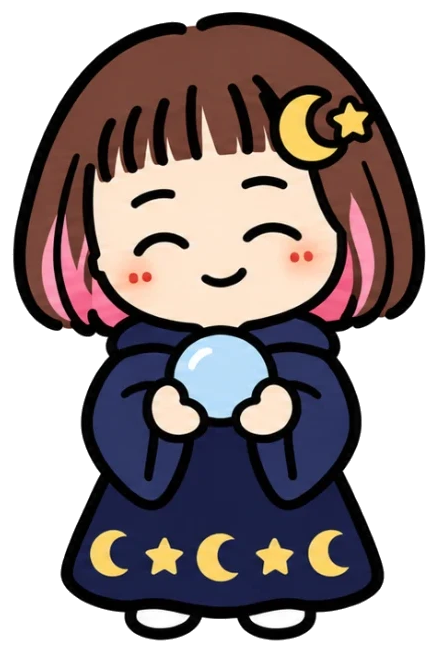

使い方
届くもの
毎週月曜のお昼12時に、LINEで12星座の「今週の運勢」が届くよ。横にスクロールして、あんたの星座の「今週の運勢を読む」を押してね。
今週の運勢：今週のあんた、乗り切り方、今週のラッキー行動、月〜日の「今日の許可」。
半期占い：半年分の流れと、月ごとのアドバイス。星座のページの「半期占い」タブから読めるよ。
今日の許可：毎日ひとつ、「それだけでいいの！？」な小さな行動。「いいの。」って、姉さんが許可する。
LINEの画面下のメニュー
今週の運勢：12星座から選んで読む
今日の許可：今日の分を、12星座まとめて見る
使い方：このページ
占いについて
占いは、本物の星の動き（満月・新月・水星逆行など）を天文計算で調べて、毎週書き下ろしています。
占いは楽しむためのもの。健康やお金、大事な決断は、ちゃんと専門の人に相談するのよ。
ゆるくいきな。姉さんが許可する。